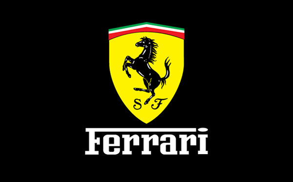
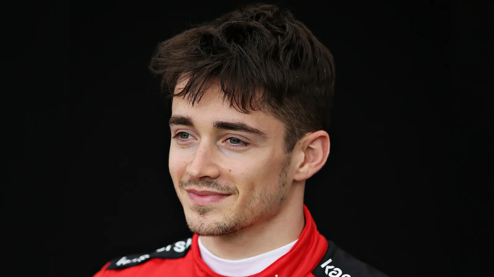
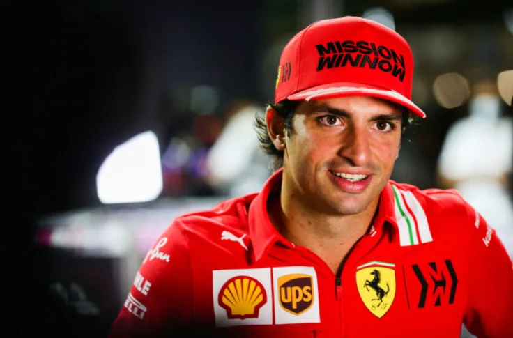

Scuderia Ferrari

La Scuderia Ferrari est l'écurie de Formule 1 la plus célèbre etla plus ancienne encore en activité : elle a participé à toutes les saisons de F1 depuis 1950.
Forcément, avec une si riche Histoire, la Scuderia rencontrera de nombreux succès mondiaux, les premiers dès les années 1950 avec pas moins de quatre titres pilotes.
Enzo Ferrari est le fondateur de la mythique marque automobile italienne, il a consacré sa vie toute entière à sa passion pour la course.
Dans les années 30, il fonda la « Scuderia Ferrari » pour permettre aux "gentlemen drivers" de démontrer leurs talents au volant de leur propre voiture.
Ferrari a joué un rôle majeur dans le monde automobile, et reste la plus mythique de toutes les écuries en formule 1, en fêtant ainsi, en 2020son 1000ème Grand Prix en Italie.
La Scuderia est située aMaranello en Italie, là où tout a commencé.
Les pilotes de la saison 2022 :
Charles Leclerc

Dès 2016, Charles Leclerc suit les traces de Jules Bianchi, son mentor, décédé en 2015, en intégrant la Ferrari Driver Academy.
Après une ascension fulgurante dans les classements qui l’a vu remporter les titres de GP3 et de Formule 1, le pilote monégasque a connu une première saison mémorable avec Sauber en 2018.
Dès sa première saison, il se fait remarquer, terminant à la septième position trois fois de suite.
Sans surprise, il n’a fallu qu’une saison à Ferrari pour l’amener à la Scuderia, où Leclerc s’est imposé comme l’un des pilotes incontournables de la grille grâce quelques victoires.
Au GP de Bahreïn, Charles Leclerc devient le premier Monégasque à réaliser une pole position en Formule 1 et le plus jeune pilote, à 21 ans, à réaliser une pole position chez Ferrari.
Carlos Sainz

C’est en 2015 que Carlos Sainz Jr fait ses débuts en Formule 1 avec la Scuderia Toro Rosso. Sa passion pour le sport automobile vient de son père, le champion du monde de rallye Carlos Sainz Sr.
Il poursuit sa carrière chez Renault lors du championnat de 2018 puis est engagé par McLaren Racing pour la saison 2019.Il obtient son premier podium en se classant troisième du GP de Brésil 2019.
Le 14 mai 2020, Carlos Sainz Jr, signe avec la Scuderia Ferrari à partir de 2021 ; il obtient d’ailleurs quatre podiums lors de sa première saison avec l'écurie italienne.